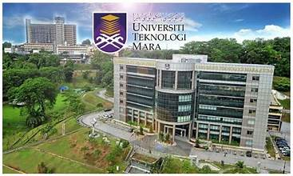

Details
- Is a public university branch located in Kedah, Malaysia.
- UiTM is a comprehensive university system in Malaysia renowned for its focus on providing educational opportunities primarily to
Bumiputera (Malay and other indigenous) students. Currently, I am studying Bachelor of
Information Science( Hons )
Library Management( CDIM260 )
UiTM Kedah,also known as Universiti Teknologi MARA (UiTM) Kedah branch,
